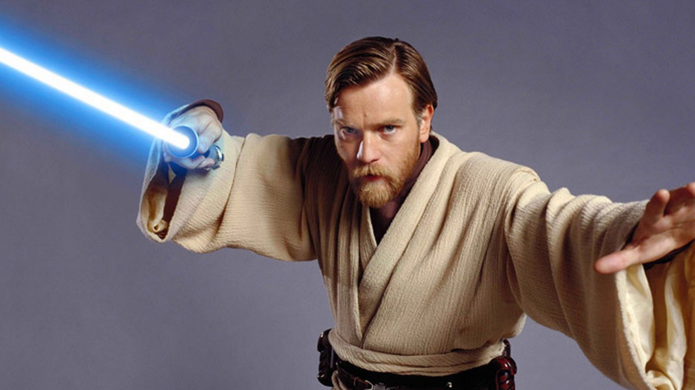

Hola de nuevo. Por lo que veo quieres saber más sobre mí. Bueno, ¿por dónde empiezo?
Nací en el planeta Stewjon en el 57 ABY. Era sensible a la Fuerza, por lo que
fui incorporado a la Orden Jedi cuando era niño. Fui criado en el Templo Jedi de Coruscant,
donde fui asignado al Maestro Jedi Qui-Gon Jinn. En el 32 ABY alcancé el rango
de Caballero Jedi al derrotar al Lord Sith Darth Maul durante la Invasión de Naboo.
Escogí entrenar a Anakin Skywalker, el profetizado Elegido que estaba destinado
a destruir a los Sith y restaurar el equilibrio en la Fuerza, habiéndoselo prometido a
Jinn, que murió en un duelo con sables de luz contra Maul.
Con la llegada de las Guerras Clon en el 22 ABY, adopté el rango militar de Alto General Jedi en el Gran Ejército de la República Galáctica, y recibí el mando de la Flota del Círculo Abierto, el Tercer Ejército de Sistemas, y el 7º Cuerpo Aéreo. El Comandante Clon Mariscal CC-2224 «Cody» sirvió como mi segundo al mando a lo largo de todo el conflicto galáctico, con sus fuerzas logrando múltiples victorias contra la Confederación de Sistemas Independientes. A mediados de la guerra, mi viejo "amigo" Maul resurgió en los asuntos galácticos, motivado por una venganza contra mí por su humillante derrota décadas antes. Aunque me enfrenté en intensos duelos en múltiples ocasiones, Maul fracasó en terminar con mi vida o quebrar mi ánimo, a pesar de asesinar a mi antigua amante, la Duquesa Satine Kryze de Mandalore. 
En el 19 ABY, maté al Comandante Supremo Separatista, el General Grievous, durante la Batalla de Utapau, terminando efectivamente con las Guerras Clon. Posteriormente sobreviví a la masacre inicial de la Gran Purga Jedi contra la Orden Jedi, producida por las maquinaciones del Lord Sith Darth Sidious. Tras descubrir que Skywalker había caído al lado oscuro de la Fuerza, convirtiéndose en el aprendiz Sith de Sidious bajo el nombre de Darth Vader, derroté a mi antiguo Padawan en Mustafar y me exilié en el planeta Tatooine del Borde Exterior mientras el Imperio Galáctico se hacía con el poder. Adoptando un estilo de vida de ermitaño como «Ben Kenobi», vigilé al hijo de Vader y de la Senadora Padmé Amidala, Luke.